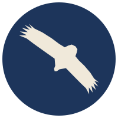
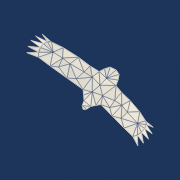
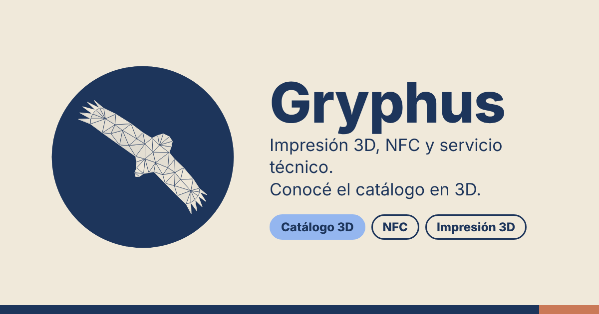

Gryphus
Un cóndor andino planeando, facetado como una pieza impresa en 3D. El cóndor vuela alto y lejos sin aletear: así queremos que se sientan nuestras piezas, livianas y bien resueltas.
Versiones del isotipo
Siempre el cóndor dentro del círculo. Cambia la combinación de colores según el fondo donde se apoya.
Terracota · destacada
Para llamar la atención o sobre fondos azules: stickers, packaging, botones.
Descargar SVG
Trama · editorial
Con trama de puntos, como una impresión. Para cuadros, piezas grandes y fondos lisos.
Descargar SVG
Simple · tamaños chicos
Sin facetas. Por debajo de 48 px las facetas se empastan: favicon, sellos, grabado láser.
Descargar SVG
Paleta
Regla 60-30-10. Cada color tiene un rol, así el color mismo explica qué es cada cosa.
#F0E9DAFondo y superficies grandes.
#1D355BEstructura, texto, el cóndor.
#94B6EFCielo e información. Nunca en lo que se toca.
#CA7957Acción: lo que se toca o pide atención.
Espacio y tamaño
El círculo necesita aire alrededor para que se lea como sello.
Área de resguardo
Dejar libre alrededor del círculo al menos un cuarto de su diámetro. Nada de texto ni bordes adentro de esa zona.
96 px48 pxTamaño mínimo
Facetado desde 48 px (15 mm impreso). Más chico, usar la versión simple, hasta 16 px.
Lo que no hay que hacer
El cóndor tiene que verse siempre igual para que se reconozca de un vistazo.
No deformar
Escalar siempre en proporción.
No cambiar los colores
Solo las tres versiones de arriba.
No girar
El cóndor vuela siempre en la misma diagonal.
No usar sobre fondos cargados
Fondos lisos de la paleta o fotos tranquilas.
Aplicaciones
Ejemplos de cómo se ve la marca en lo que hacemos y usamos todos los días.
Favicon
La versión simple en la pestaña del navegador.

GryphusÍcono en el celular
Al guardar el catálogo en la pantalla de inicio.
Perfil de redes
La versión azul: se recorta bien en círculo.
Acercá tu celulary seguinos en InstagramTótem NFC
El logo en nuestros propios tótems, impreso en PLA hueso con base azul.
Sticker
Terracota con borde blanco de troquel, para pegar en las piezas y el packaging.
GryphusTarjeta personal
Frente azul con el isotipo terracota; dorso hueso con la franja de la paleta.

Link compartido
Lo que aparece en WhatsApp o Instagram cuando se comparte el catálogo.